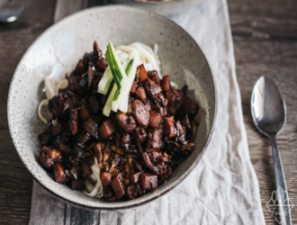

Jajangmyeon (Mì Sốt Tương Đen) là một món ăn được rất nhiều người yêu thích ở Hàn Quốc. Bắt nguồn từ một nhà hàng Trung Hoa ở khu phố Tàu của thành phố Incheon vào những năm 1905, ngày nay Jajangmyeon đã trở thành một trong những món ăn tiêu biểu của nền ẩm thực Hàn Quốc và được nhiều người trên thế giới biết đến.
Cách làm Jajangmyeon cũng vô cùng đơn giản, điều bạn cần lưu ý là phải chiên phần sốt tương đen trước khi bắt đầu nấu. Việc này giúp loại bỏ vị đắng có trong sốt, làm tăng hương vị của món ăn lên rất nhiều lần. Vì bản chất vị tương đen khá làm mặn nên chúng ta không cần phải nêm thêm muối, tuy nhiên đường là gia vị cần thiết để cân bằng lại vị của món ăn.
Thịt heo là loại thịt thường được sử dụng khi nấu Jajangmyeon, tuy nhiên bạn cũng có thể dùng thịt gà, thịt bò hoặc hải sản nếu thích nhé. Nào chúng ta cùng vào bếp thôi!
Công Thức Jajangmyeon (Mì Sốt Tương Đen Hàn Quốc) khẩu phần 2-3 người
THỜI GIAN CHUẨN BỊ: 20 phút
THỜI GIAN NẤU: 20 phút
Nguyên liệu:
- Thịt má đùi gà không da không xương: 1kg
- Khoai tây: 200g
- Bắp cải: 150g
- Hành tây: ½ củ
- Tỏi băm: 20g
- Đường: 30g
- Sốt tương đen Hàn Quốc: 150g
- Mì Hàn Quốc
Cách làm:
1. Cắt tất cả các nguyên liệu thành hạt lựu
2. Bắc nồi sâu lòng lên bếp, lửa nhỏ, khi nồi nóng cho dầu ăn vào, sau đó cho sốt tương đen vào, đảo đều trong vòng 5 phút. Sau đó đổ dầu và sốt tương đen ra.
3. Bắc nồi lên lại bếp, lửa vừa cho tỏi vào phi cho thơm. Khi đã thơm bạn cho thịt mà đùi gà vào đảo cho thịt săn lại một chút sau đó cho khoai tây, bắp cải và hành tây đã cắt hạt lựu vào.
4. Cho sốt tương đen đã xào vào lại trong nồi, lưu ý chỉ lấy sốt, loại bỏ lượng dầu còn dư. Đảo đều và thêm nước nếu cần.
5. Nêm đường vào và để sốt ninh liu riu tới khi các nguyên liệu chín hẳn.
6. Nấu mì theo hướng dẫn trên bao bì sản phẩm.
7. Khi các nguyên liệu đã chín, thì món Jajangmyeon cũng sẵn sàng rồi!
8. Cho sốt lên trên mì, trang trí với một chút dưa leo xắt sợi và măm thôi!